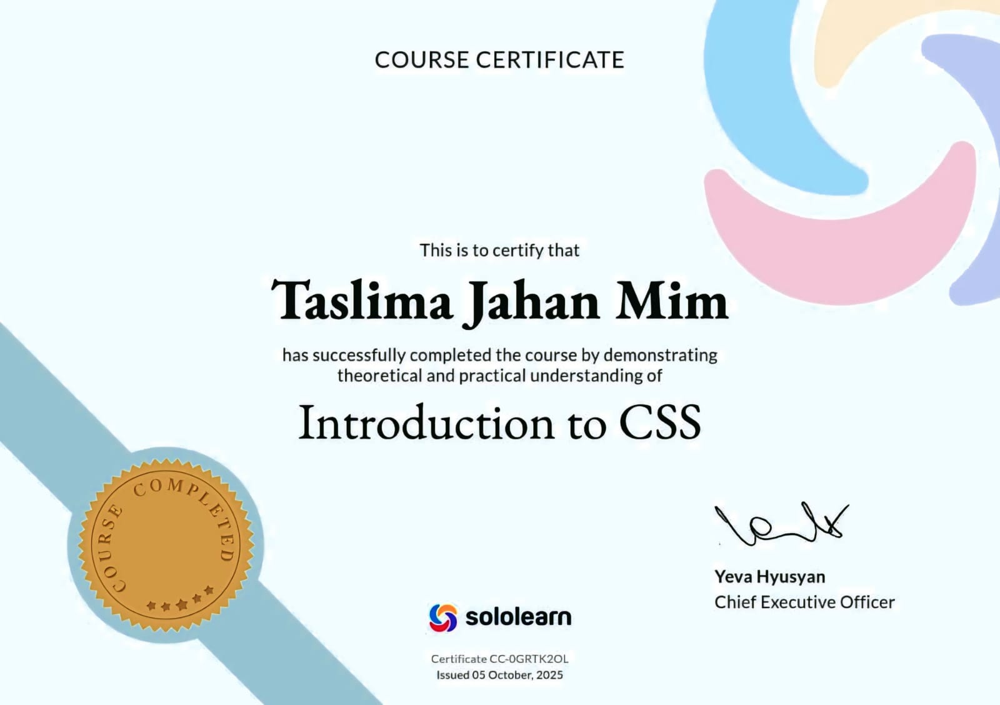
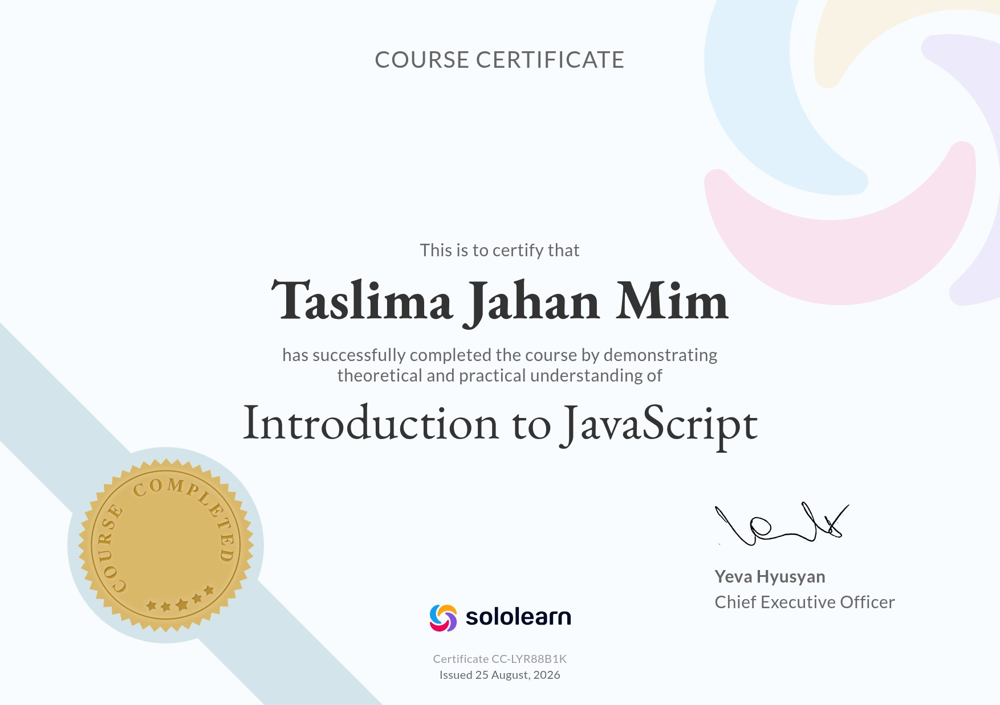

💻 Technical Skills
- HTML5 & CSS3
- JavaScript (ES6+)
- Node.js
- JSON
- Python — Beginner
- Responsive Web Design
- Git & GitHub
I am a self-taught web developer from Dhaka, Bangladesh, interested in software engineering, artificial intelligence, and technology. I build practical projects using HTML, CSS, JavaScript, and Node.js while continuously developing my programming and research skills.
My goal is to pursue undergraduate studies in Computer Science or Software Engineering and build a strong foundation in software development, artificial intelligence, and data-driven technologies.
I have always been interested in understanding how things work rather than simply memorizing information. That curiosity led me toward programming and web development, where I discovered how ideas can be transformed into functional software.
My learning journey has been largely self-directed. I started building small web projects and gradually moved toward more structured applications involving authentication, backend logic, artificial intelligence, and research.
Beyond technology, I am interested in languages, cultures, education, and cross-cultural learning. I am currently learning Korean and exploring Korean culture and society as part of my broader interest in studying and working in an international environment.
| Exam | Group | Institution | Year | GPA |
|---|---|---|---|---|
| SSC | Science | Bangladesh Bank High School | 2022 | 4.83 / 5.00 |
| HSC | Science | Khilgaon Girls School & ; College | 2024 | 4.42 / 5.00 |
| Undergraduate | Bachelor of Business Administration (BBA), Management | National University-affiliated institution, Bangladesh | 2025–Present |
A web-based blood donation management application designed to connect blood donors with people seeking blood. The project includes user authentication, donor information management, and email-based functionality.
What I learned: Backend logic, user authentication, data handling, email functionality, and connecting frontend interfaces with server-side functionality.
A prototype tool that analyzes AI-generated code for common hallucination patterns, including fabricated APIs, non-existent libraries, and other potentially invalid code patterns.
What I learned: Pattern detection, risk-scoring logic, regular expressions, visualization, and connecting research questions with practical software development.
A web-based tool focused on analyzing and improving prompts for AI systems. It is designed to help users understand how prompt structure can influence AI-generated responses.
What I learned: Frontend development, interactive interfaces, JavaScript-based analysis, and designing tools around practical AI use cases.
A task management application that allows users to add, delete, and mark tasks as complete. Built as a practical project for learning DOM manipulation and client-side state handling.
What I learned: Event handling, dynamic UI updates, DOM manipulation, and organizing JavaScript logic.
A frontend authentication project featuring sign up, login, forgot password functionality, security-question verification, form validation, and local storage-based user data handling.
What I learned: Form validation, user data management, conditional logic, and multi-step user flows.
A two-player browser game with win detection, draw detection, and a restart feature. This was my first complete project focused on game logic and interactive JavaScript behavior.
What I learned: Game logic, conditional statements, event handling, state management, and interactive UI design.
A systematic review of research on hallucinated code generated by artificial intelligence systems. The review examines detection methods, mitigation strategies, and evaluation approaches used in research on AI-generated code.
AI-generated code · Code hallucination · Detection · Mitigation · Evaluation
Self-archived on Zenodo
Connection to my projects: The research topic influenced the development of AI HalluDetect, allowing me to explore how research concepts can be translated into a practical software prototype.
My interest in Korea extends beyond university study. I have been independently learning Korean and exploring Korean culture, language, history, and society as part of my preparation for studying in Korea.
Currently studying Korean independently, with a focus on Hangul, vocabulary, grammar, reading, and everyday communication.
I took TOPIK I as part of my Korean language learning journey to assess my progress and identify areas for further improvement.
I also explore Korean culture and society through documentaries, articles, language-learning resources, and independent study.
My goal: To continue improving my Korean language ability before and during my studies in Korea while actively adapting to the academic and cultural environment.
Completed a CSS course through SoloLearn as part of my self-directed web development learning.

Completed an HTML course through SoloLearn, building the foundation for my web development projects.
Completed a JavaScript course through SoloLearn, strengthening my understanding of interactive web development and programming logic.

Self-Employed · Dhaka, Bangladesh
Teaching students from primary to secondary levels in Mathematics, English, Bangla, and General Science. This long-term experience has strengthened my communication, patience, leadership, and ability to explain complex concepts clearly.
| tmv301295@gmail.com | |
| Location | Motijheel, Dhaka, Bangladesh |
| Taslima Jahan Mim | |
| Taslima Jahan Mim | |
| GitHub | Mim3012957 |
| Medium | @tmv301295 |